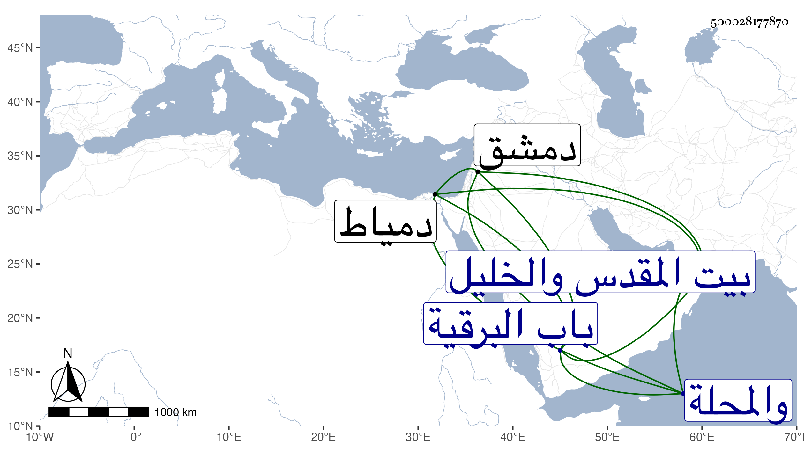

0902Sakhawi.DawLamic.ITO20230111-ara1.EIS1600.500028177870
Biography ID: 500028177870
531
عبد الصمد بن عبد الرحمن بن محمد بن أبي بكر بن عيسى وقيل بدل عيسى محمد بن منصور وهو الذي كتبه لي والأول أتقن عز الدين وصائن الدين ابن الزين بن الشمس النجمي الصحراوي الزيات بها أخو محمد ومريم الآتيين وأبوهم ممن أخذ عنه شيخنا ويعرف كسلفه بالهرساني بفتحات وآخره نون . ولد سنة احدى وتسعين وسبعمائة بالمدرسة النجمية طفاي تمر خارج باب البرقية ونشأ بها فقرأ القرآن عند أبيه والشمس الدميري وحضر مع أبيه عند البلقيني وأحضر وهو في الثالثة على التاج بن الفصيح الكثير من السنن الكبرى للنسائي رواية ابن الأحمر وعلى الحافظين العراقي والهيثمي والقاضي ناصر الدين نصر الله الحنبلي ختمها فقط ثم سمع على جده الشمس والحافظين بعض سنن أبي داود وعلي ابن أبي المجد الكثير من البخاري والختم منه فقط على الحافظين والتنوخي والختم منه أيضا لكن أوله دون أول الذي قبله علي الابناسي والغماري وابن الشيخة ، وكذا سمع من العراقي من أماليه بحضرة الهيثمي وحج مرارا وزار بيت المقدس والخليل ودخل دمشق ودمياط والمحلة ، وحدث سمعت عليه قديما ثم تسارع إليه الطلبة بأخرة لتفرده بالنسائي وأخذوه وغيره عنه بل طلبه النجم بن حجي وحدث عنه بغالب البخاري رفيقا للشاوي فسمع عليه خلق ، وكان خيرا يتعيش بحانوت بالصحراء ويكتب على الاستدعاءات خطا ضعيفا . مات في شعبان سنة تسع وسبعين وصلى عليه بالصحراء ودفن بحوش مجاور لتربة السويفي تجاه تربة الطويل بالقرب من تربة اينال رحمه الله .
